Visual_analog_details_A4_2026-11-2501. Speediance Gym Monster 2
Детали на фотографиях: польза, ограничения и перенос в наш проект.
Детали на фотографиях: польза, ограничения и перенос в наш проект.
Инвентарь: тросовые рукояти, гриф, манжеты; отдельная скамья зависит от комплекта. Платформа складывается, выход троса переставляется по стойке; есть кольцо управления. Д×Ш×В: 1220×690×1850 мм; сложен 370×690×1850 мм. Масса 78 кг. Экран 21,5 дюйма. Точный состав рамы и покрытий в выбранной спецификации не раскрыт.
Корпус с отдельными принадлежностями
Плюс: У каждой насадки можно задать своё место.
Ограничение: Скамья и дополнения всё равно занимают отдельный пол.
Регулировка выхода троса
Плюс: Ряд положений делает высоту настройки различимой.
Ограничение: Нужны хват, усилие перестановки и подтверждение фиксации.
Шарнир платформы
Плюс: Складная часть уменьшает место хранения.
Ограничение: Подвижная зона и жёсткая поверхность не заменяют мягкий коврик.
Кольцо управления
Плюс: Команда подаётся без подхода к дисплею.
Ограничение: Добавляются питание, связь и зависимость от программы.
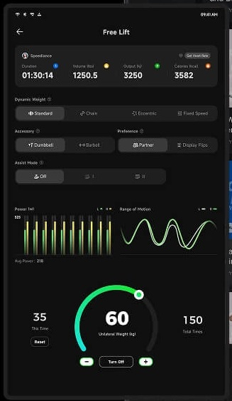
Экран настройки нагрузки
Плюс: Понятно, что регулируется перед движением.
Ограничение: Для нашей основы экран усложняет изготовление и обслуживание.
Человек в приседе
Плюс: Видны полная траектория и место перед корпусом.
Ограничение: Присед с тросом отличается от выбранного приседа с гантелью.
Дети: отдельная панель для четверенек и положения лёжа; привод им для этих примеров не нужен.
Молодые: изучаем подготовку нагрузки, но сохраняем различие между тросом и свободными весами.
Пожилые: тяговая рукоять не является неподвижным хватом для подъёма пяток.
Нейтральный вывод: Полезен как пример понятной настройки. Цифровую силовую станцию не предлагаю основой первого макета: её сложность не выведена из наших основных движений.
Опыт использования: Автор хвалит подсказки и управление, но описывает зависания экрана и ошибки учёта подходов. Это отдельный опыт, а не частота отказов.
Tom's Guide - Amanda Caswell, 14 июня 2025
Характеристики и фото: Speediance Gym Monster 2: спецификация и инструкция
02. Solo Signature Adjustable
Детали на фотографиях: польза, ограничения и перенос в наш проект.
Детали на фотографиях: польза, ограничения и перенос в наш проект.
Четыре пары гантелей и две гири располагаются под сиденьем; комплект весов выбирается отдельно. Спинка имеет три положения; колёса с рукояткой - опция. Д×Ш×В: 995×390×449 мм; 65 кг без весов. Рама - низкоуглеродистая сталь; обивка UPVC, подушка 60 мм по карточке производителя.
Сиденье над хранением
Плюс: Один корпус объединяет посадку и инвентарь.
Ограничение: Высота и глубина посадки ещё не подобраны нашему пользователю.
Гиря в торцевой ячейке
Плюс: Можно достать один предмет, не открывая весь корпус.
Ограничение: Нужны наклон и просвет для кисти; вес доступен ребёнку.
Колесо с рукояткой
Плюс: Есть отдельный узел для переноса изделия.
Ограничение: Способ обездвиживания при вставании надо проверить.
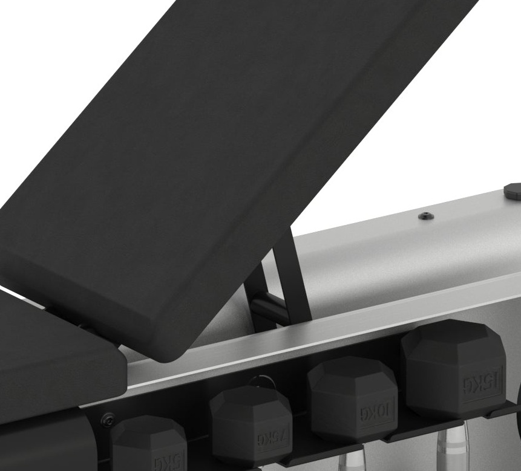
Узел спинки крупным планом
Плюс: Регулируемая опора поддерживает другие варианты занятий.
Ограничение: Для приседа, наклона и отжимания с коленей она необязательна.
Вынутые гантели
Плюс: Понятно, какие предметы временно находятся вне корпуса.
Ограничение: На время занятия им нужно место вне прохода.
Человек на наклонной опоре
Плюс: Виден контакт тела с обивкой и положение стоп.
Ограничение: Фотография не доказывает удобство пожилого человека.
Дети: предлагаем доступное место мягкого предмета отдельно от тяжёлых весов.
Молодые: наиболее прямой перенос - взять гантель для приседа или наклона и вернуть.
Пожилые: посадку сравниваем натурно; колёса и подвижная спинка не заменяют поручень.
Нейтральный вывод: Один из главных аналогов доступа к инвентарю. Для нашего первого варианта важнее неподвижная посадка и разделение хранения, чем копирование всех регулировок.
Опыт использования: Тренер положительно оценивает устойчивость и порядок. Публикация размещена продавцом; это не независимое испытание и не проверка многолетнего ресурса.
Solo Fitness - опыт тренера Debbie Macphee
Характеристики и фото: Solo Signature Storage Bench (Adjustable)
03. Technogym Bench
Детали на фотографиях: польза, ограничения и перенос в наш проект.
Детали на фотографиях: польза, ограничения и перенос в наш проект.
В фирменном каталоге: гантели, эластичные ленты, утяжелители для кистей и коврик; есть отдельные места предметов и колёса. Д×Ш×В: 1129×376×455 мм; 98,8 кг с комплектом по каталогу. Видны мягкий верх и жёсткие ячейки; точный состав корпуса в используемом каталоге не установлен.
Скамья и распределение предметов
Плюс: Каждому предмету отведено узнаваемое место.
Ограничение: Открытые тяжёлые предметы требуют другого доступа в семье.
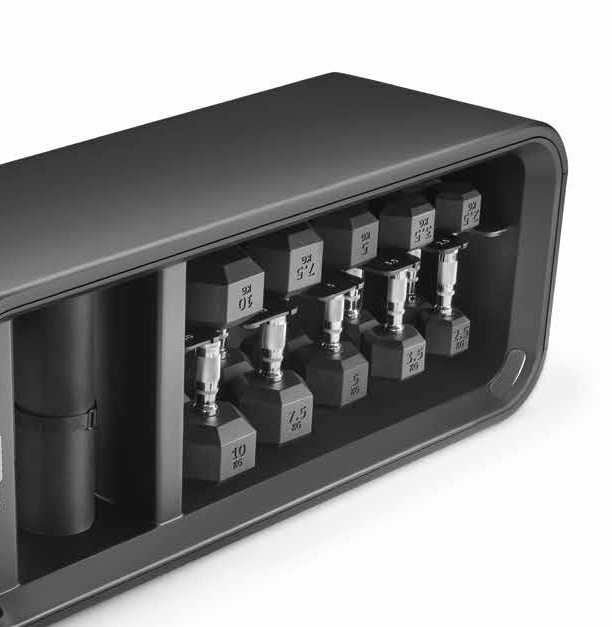
Разделители гантелей
Плюс: Вес можно вернуть в определённое гнездо.
Ограничение: Удержание при наклоне и перевозке надо проверять отдельно.
Колёса и торец
Плюс: Транспортный узел отделён от рабочей поверхности.
Ограничение: Катить с инвентарём не значит надёжно удерживать его.
Лента у корпуса
Плюс: Видно направление тяги относительно опоры.
Ограничение: Наша тяга ленты сидя использует стопы и не требует такого крепления.
Контакт тела на узкой опоре
Плюс: Хорошо различимы край обивки и положение корпуса.
Ограничение: Комфорт спины и жёсткость поверхности не определяются внешним видом.
Поворот корпуса сидя
Плюс: Можно сравнить свободное место для рук.
Ограничение: Исходный пример для пожилых выполняется со стопами на полу, без этого инвентаря.
Дети: берём принцип отдельного покрытия пола, не взрослые утяжелители.
Молодые: полезны и коврик, и гантели; корпус остаётся вне траекторий.
Пожилые: отдельно проверяем посадку, вставание и поворот со стопами на полу.
Нейтральный вывод: Самый прямой пример связи хранения с отдельной рабочей поверхностью. У своего изделия нужно лучше проверить контакт тела, семейный доступ и удержание весов.
Опыт использования: Тестировщик отмечает компактную раскладку, жёсткость опоры и выпадение гантелей при перевозке. Это повод проверить удержание предметов, не диагноз всем экземплярам.
T3 - Matt Kollat, 10 декабря 2022
Характеристики и фото: Technogym Bench: фирменный каталог, 16 страниц
04. NOHRD StepBox
Детали на фотографиях: польза, ограничения и перенос в наш проект.
Детали на фотографиях: польза, ограничения и перенос в наш проект.
Съёмные боковины служат степами; внутри SwingBells, ленты и другое оборудование. Карабины лент крепятся к выдвижным крюкам снизу. Д×Ш×В: 1210×570×455 мм; масса 80 кг, высота отдельного степа 300 мм. Боковины - шпонированная фанера с рамой из массива; верх с обивкой.
Закрытая скамья
Плюс: Спортивное содержимое можно убрать из жилой комнаты.
Ограничение: Закрытый фасад сам по себе не является ограничителем детского доступа.
Снятие большой боковины
Плюс: Одна часть имеет отдельное рабочее назначение.
Ограничение: Чтобы достать предмет, приходится снять и разместить крупную деталь.
Карабин и выдвижной крюк
Плюс: Есть различимое разъёмное соединение ленты с корпусом.
Ограничение: Оно передаёт силовую тягу, но не работает как поручень.
Поверхность степа
Плюс: Можно изучить кромку и отделение мягкого контакта от рамы.
Ограничение: Жёсткая ступень высотой 300 мм не нужна нашим детским действиям на полу.
Отсеки после раскрытия
Плюс: Части и принадлежности разложены по местам.
Ограничение: Число открываний и переносимую массу нужно учитывать в подготовке.
Тяга с опорой рукой
Плюс: Виден контакт кисти с поверхностью и место рядом.
Ограничение: Это силовой пример; его не переносим автоматически всем трём группам.
Дети: мягкая панель на полу - наш перенос принципа отделяемой части, не копия степа.
Молодые: свободные веса хранятся рядом; другой хват SwingBells оцениваем отдельно.
Пожилые: проверяем сиденье; подготовка не должна требовать переноса тяжёлой боковины.
Нейтральный вывод: Ценен как пример съёмности и закрытого хранения. Копировать большую съёмную ступень необязательно: предпочтительнее доступ к одному предмету без лишнего раскрытия.
Надёжный длительный опыт именно этой модели в текущей подборке не установлен. Ресурс и удобство по одним фотографиям не оцениваем.
Характеристики и фото: NOHRD StepBox: описание и технические данные
05. FITBENCH FREE
Детали на фотографиях: польза, ограничения и перенос в наш проект.
Детали на фотографиях: польза, ограничения и перенос в наш проект.
Гантели, гиря, мяч и ленты размещены в ячейках; верх поднимается, видны кольца для карабинов. Конкретный состав относится к FREE, не к другим FITBENCH. Д×Ш×В: около 1181×406×419 мм (пересчёт 46,5×16×16,5 дюйма). Основание полиэтиленовое по FAQ бренда; точная марка полимера не указана.
Боковые и торцевые ячейки
Плюс: Разные формы инвентаря получают разные места.
Ограничение: Низкие ячейки могут требовать глубокого наклона.
Кольцо для карабина
Плюс: Насадку можно отсоединить и заменить.
Ограничение: Силу нужно передать через крепёж на корпус, а не только через видимое кольцо.
Гиря и мяч в торце
Плюс: Форма гнезда помогает понять место возврата.
Ограничение: Тяжёлый силовой мяч не равен мягкому игровому мячу.
Присоединение ленты
Плюс: В кадре видно действие пальцев и смену насадки.
Ограничение: Это стоп-кадр; по нему не установить усилие и ресурс защёлки.
Опора под поднятым верхом
Плюс: Можно изучить положение опоры и фиксацию наклона.
Ограничение: Добавляется механизм, которого не требуют наши основные движения.
Отжимание от высокой поверхности
Плюс: Хорошо читается контакт ладоней с опорой.
Ограничение: Это другое упражнение, чем выбранное отжимание с коленей на полу.
Дети: исследуем панель и лёгкое игровое хранение вместо полного взрослого комплекта.
Молодые: ячейки подходят как принцип хранения гантелей для приседа и наклона.
Пожилые: проверяем высоту сиденья; крепление ленты не становится неподвижной опорой.
Нейтральный вывод: Хороший референс гнёзд и сменных принадлежностей. Формованный корпус и подъёмный верх не считаю обязательными: способ изготовления и полезность каждого механизма надо обосновать.
Опыт использования: В единственном доступном отзыве хвалят установку и устойчивость. Одной записи недостаточно для вывода о долговечности.
Gym Emotion - один анонимный отзыв о FREE Naked
Характеристики и фото: FITBENCH FREE: конкретная модель
06. NOHRD Wall Compact
Детали на фотографиях: польза, ограничения и перенос в наш проект.
Детали на фотографиях: польза, ограничения и перенос в наш проект.
Тросовая система, лыжная тяга, SwingBells и экран собраны вертикально. Корпус опирается на пол и по инструкции крепится к стене. Ш×Г×В: 1215×500×2170 мм; масса 250 кг. Деревянная отделка и металлические механизмы; состав каждого слоя корпуса не подтверждён выбранной инструкцией.
Экран над хранением
Плюс: Назначение предметов видно на одном фасаде.
Ограничение: Достижимость экрана и нижних весов различается у пользователей.
Держатели свободных весов
Плюс: Каждому весу можно дать своё место.
Ограничение: Нужны зазор для кисти и отдельное решение доступа ребёнка.
Тросовый узел
Плюс: Видно изменение направления и высоты тяги.
Ограничение: Подвижная рукоять не даёт неподвижной поддержки стоя.
Настенное крепление из инструкции
Плюс: Рисунок показывает, как устройство связано со стеной.
Ограничение: Эта установка противоречит нашему условию без сверления.
Дети: переносим только организацию хранения и отдельную напольную панель.
Молодые: для работы со свободными весами всё равно нужен пол перед шкафом.
Пожилые: нижние гнёзда и верхний экран надо проверять по досягаемости.
Нейтральный вывод: Полезен вертикальным распределением инвентаря. Настенную силовую схему переносить нельзя: для нашего напольного модуля заново проектируется основание.
Надёжный длительный опыт именно этой модели в текущей подборке не установлен. Ресурс и удобство по одним фотографиям не оцениваем.
Характеристики и фото: NOHRD Wall Compact: размеры и инструкция
07. Tonal 2
Детали на фотографиях: польза, ограничения и перенос в наш проект.
Детали на фотографиях: польза, ограничения и перенос в наш проект.
Два переставляемых рычага с тросами, сменные рукояти, кнопка управления на рукояти. Скамья и коврик - отдельные предметы. Корпус: Ш≈546, В≈1293, Г≈140 мм. Рекомендованная брендом зона пола ≈2,13×2,13 м. Настенный профессиональный монтаж. Состав корпуса в выбранной карточке не раскрыт.
Корпус на стене
Плюс: Хорошо отделены сам блок и свободная зона занятия.
Ограничение: Монтаж с креплением к стене не соответствует нашему условию.
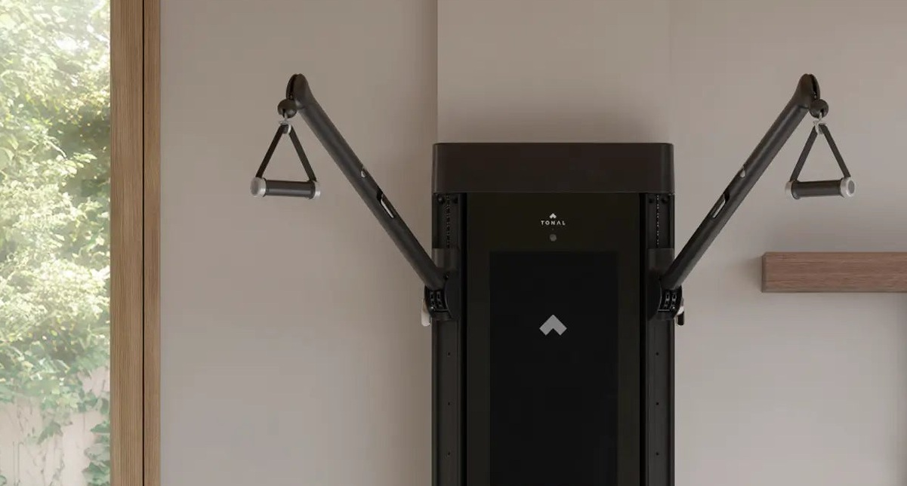
Шарнир переставляемого рычага
Плюс: Можно изучить различимые положения регулировки.
Ограничение: Узел сложнее неподвижного хвата и не заменяет его.
Кнопка рядом с кистью
Плюс: Команда доступна без смены места человека.
Ограничение: Сама польза экрана и привода ещё не выведена из наших движений.
Схема зоны человека
Плюс: Показан пол, который нужен за пределами корпуса.
Ограничение: Тонкий корпус не означает маленькую площадь упражнения.
Дети: экран и тяга не требуются выбранным действиям на полу.
Молодые: для троса и свободных гантелей различаются усилие и подготовка.
Пожилые: берём идею доступного управления, но разрабатываем отдельную неподвижную опору.
Нейтральный вывод: Ценен интерфейсом и читаемыми регулировками. Как основа нашего первого эскиза чрезмерно усложняет установку и обслуживание.
Опыт использования: Автор отмечает удобство занятий, расходы на установку и зависимость возможностей от подписки. Длительный ресурс этим тестом не установлен.
WIRED - Boutayna Chokrane, 3 марта 2025
Характеристики и фото: Tonal 2: размеры и условия установки
08. Cassina Ottagono
Детали на фотографиях: польза, ограничения и перенос в наш проект.
Детали на фотографиях: польза, ограничения и перенос в наш проект.
Открывающаяся колонна с местами для оборудования Technogym. По фото различимы отдельные крючки и держатели. Закрытый корпус 770×770×1900 мм. MDF с полиуретановой окраской; крючки и ручка - полированная нержавеющая сталь. Есть внутренняя подсветка.
Закрытая и открытая колонна
Плюс: Оборудование может выглядеть как обычная мебель.
Ограничение: При открывании меняются реальная площадь и подход.
Отдельные крючки гирь
Плюс: Каждому предмету отведено место.
Ограничение: Нужно проверить снятие одной рукой и отсутствие зацепа одежды.
Подставка под гантели
Плюс: Вес можно взять независимо от других вещей.
Ограничение: Предметы остаются тяжёлыми; высота хранения требует подбора.
Крючки для лент
Плюс: Ленты разделены и их проще осмотреть.
Ограничение: Крючок хранения не подтверждён как крепление для силовой тяги.
Дети: отдельная доступная ячейка мягкого предмета вместо открытых тяжёлых весов.
Молодые: интересен цикл взять вес и вернуть на своё место.
Пожилые: важно достать предмет без обязательного глубокого наклона и обхода двери.
Нейтральный вывод: Сильный пример мебельного образа и адресного хранения. Его отделка, подсветка и высокие фасады не нужны автоматически нашему функциональному макету.
Надёжный длительный опыт именно этой модели в текущей подборке не установлен. Ресурс и удобство по одним фотографиям не оцениваем.
Характеристики и фото: Cassina Ottagono: официальный лист продукта
09. Javorina / BeOak SANA
Детали на фотографиях: польза, ограничения и перенос в наш проект.
Детали на фотографиях: польза, ограничения и перенос в наш проект.
Две съёмные перекладины хранятся на магнитах; настенный модуль имеет скрытое стальное ядро. Скамья отдельная, со съёмной обивкой. Материал - массив дуба и сталь. Скамья Д×Ш×В: 1000×340×440 мм. Основная настенная панель: В1040×Ш360 мм по размерной схеме. Производитель требует крепление к прочной стене.
Перестановка перекладины
Плюс: Назначение съёмной части видно в действии.
Ограничение: Нужны различимые рабочие гнёзда и подтверждение фиксации.
Место возврата круглой детали
Плюс: Магнит помогает хранить ненагруженный модуль.
Ограничение: Магнитное хранение не доказывает силовую фиксацию поручня.
Боковой узел крупным планом
Плюс: Можно проследить место соединения деталей.
Ограничение: Без конструкции и испытания нельзя назначить ему нашу нагрузку.
Скамья с отдельным мягким контактом
Плюс: Жёсткую раму и обивку можно исследовать раздельно.
Ограничение: Положение стоп и удобство вставания нельзя получить из фотографии.
Дети: принцип отдельной мягкой поверхности, а не обязательный вис.
Молодые: съёмность и хранение интереснее высокой перекладины для основных движений.
Пожилые: подбираем свою посадку и свой хват, не высоту перекладины для подтягивания.
Нейтральный вывод: Ценен разделением каркаса, контактной части и хранения. Для нашего проекта магнит допустимо изучать как помощь возврату детали; нагруженный хват требует своего механического соединения.
Надёжный длительный опыт именно этой модели в текущей подборке не установлен. Ресурс и удобство по одним фотографиям не оцениваем.
Характеристики и фото: SANA: BeOak by Javorina и Tomas Kral
10. Goldenhome Fitness Cabinet
Детали на фотографиях: польза, ограничения и перенос в наш проект.
Детали на фотографиях: польза, ограничения и перенос в наш проект.
В опубликованных видах встроенная система объединяет закрытые фасады, открытые места предметов и тренировочную зону. Точные габариты, материалы панелей, состав комплекта и силовые соединения в доступных сохранённых материалах не установлены. Оценка только по описанию и фото, сохранённым 21.11.2026.
Встроенное хранение
Плюс: У спортивных предметов появляется постоянное место.
Ограничение: Мобильность и самостоятельная силовая схема не показаны.
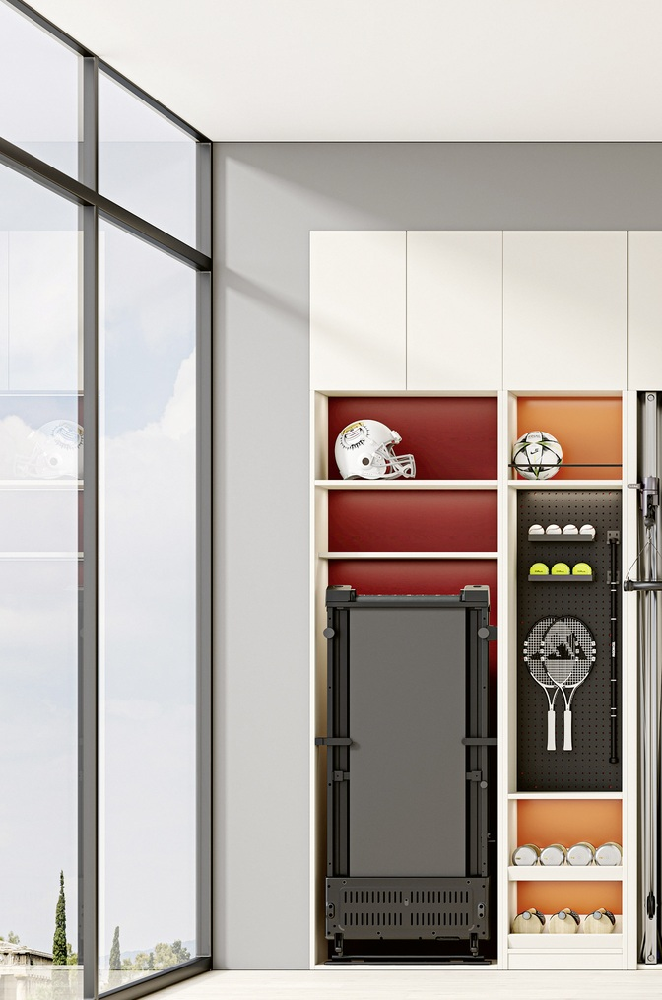
Открытые двери
Плюс: Можно сравнить бытовое и рабочее состояния.
Ограничение: Дверь может занять подход; масштаб по фото не определён.
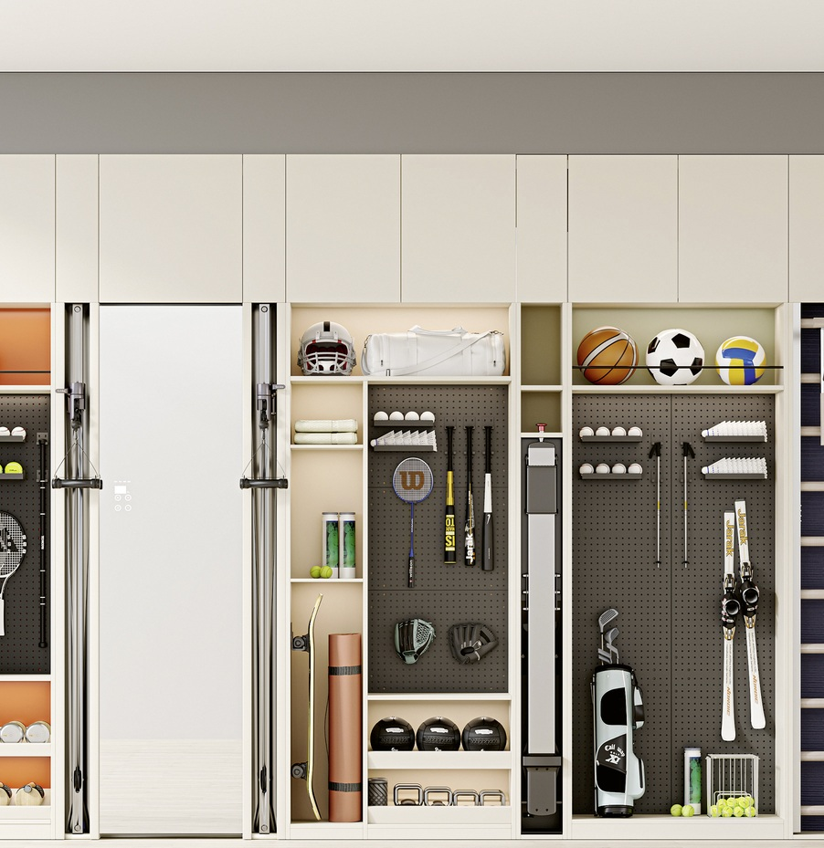
Разделение внутренних предметов
Плюс: Виден принцип группировки оборудования.
Ограничение: Точный комплект и размеры гнёзд не раскрыты.
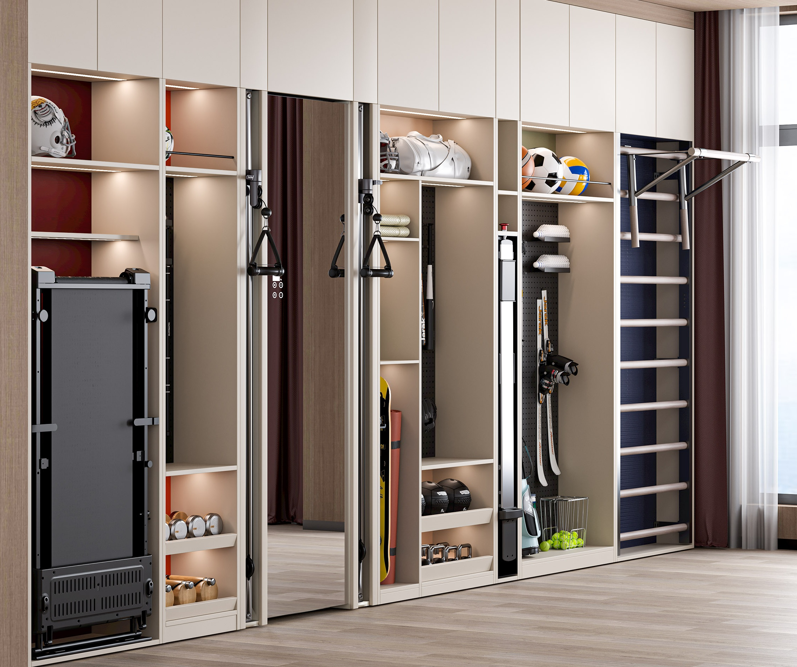
Край рабочей зоны
Плюс: Показана связь шкафа с окружающей комнатой.
Ограничение: Это фрагмент исходного фото, не измеренный план помещения.
Дети: полезно разделять игровые предметы и тяжёлый инвентарь.
Молодые: хранение рядом с занятием, без копирования неизвестного силового механизма.
Пожилые: удобное сиденье и неподвижный хват в доступных материалах не подтверждены.
Нейтральный вывод: Оставляем как референс мебельного хранения. Недостаток технических данных не позволяет считать его готовой конструктивной основой.
Надёжный длительный опыт именно этой модели в текущей подборке не установлен. Ресурс и удобство по одним фотографиям не оцениваем.
Характеристики и фото: Goldenhome Integrated Fitness Cabinet: Red Dot
11. AT LEAST Home Workout Bench
Детали на фотографиях: польза, ограничения и перенос в наш проект.
Детали на фотографиях: польза, ограничения и перенос в наш проект.
Концепт Red Dot Design Concept 2024: скамья со скрытым хранением. На изображениях открывается часть верха; в описании указана обивочная ткань. Размеры, точный состав каркаса и ткани, ресурс шарнира и нагрузка не раскрыты в выбранной публикации. Серийная инструкция не получена.
Мебельный образ скамьи
Плюс: Тренировочная функция не доминирует в интерьере.
Ограничение: Внешний вид не подтверждает удобства и ресурса.
Доступ под верхом
Плюс: Вещи можно скрыть в одном корпусе.
Ограничение: Открывание связано с рабочей поверхностью сиденья.
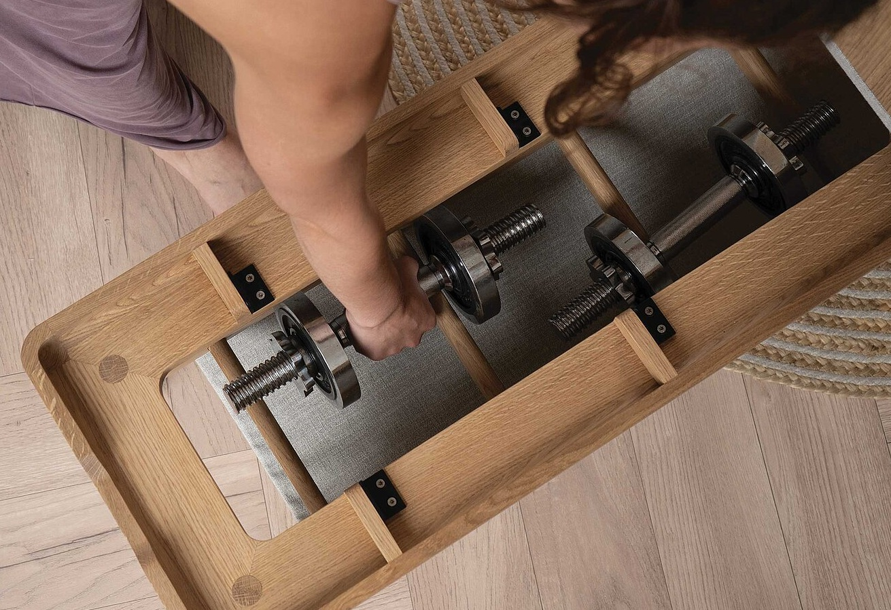
Раскладка предметов крупнее
Плюс: Понятно, что хранится под крышкой.
Ограничение: Нужны зазор для кисти и удержание крышки.
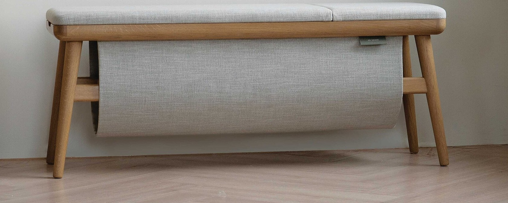
Обивка и кромка
Плюс: Можно изучать стык мягкого и жёсткого.
Ограничение: Состав ткани, очистка и ресурс шва не указаны.
Дети: предлагаем отдельное лёгкое хранение без общего доступа к весам.
Молодые: для гантелей нужен быстрый доступ, не требующий полного раскрытия сиденья.
Пожилые: сохраняем неподвижную посадку; открываемая часть не должна подменять опору.
Нейтральный вывод: Полезен спокойной мебельной подачей. Это концепт с неполной технической документацией, поэтому его плюсы остаются основаниями для собственного макета, а не доказанной долговечностью.
Надёжный длительный опыт именно этой модели в текущей подборке не установлен. Ресурс и удобство по одним фотографиям не оцениваем.
Характеристики и фото: AT LEAST Home Workout Bench: Red Dot Concept 2024
12. PENT. JOANA Reformer
Детали на фотографиях: польза, ограничения и перенос в наш проект.
Детали на фотографиях: польза, ограничения и перенос в наш проект.
Подвижная каретка, пружины, ремни, переставляемые мягкие опоры. В линейке заявлены ясень/орех, кожа и нержавеющая сталь. Д×Ш×В: 2460×670×635 мм по фирменной размерной схеме, сохранённой с карточки JOANA. Это размер изделия, не рабочей зоны человека.
Пружины и выбор сопротивления
Плюс: Видно, какие элементы меняют нагрузку.
Ограничение: Такое сопротивление не требуется нашим основным девяти действиям.
Карабин и текстильная рукоять
Плюс: Контакт кисти отделён от силовой связи.
Ограничение: Ремень и шов требуют отдельной проверки износа.
Различимые положения регулировки
Плюс: Можно понять, в каком положении находится узел.
Ограничение: Само наличие отметки не подтверждает надёжность фиксации.
Подвижная каретка и мягкие части
Плюс: Хорошо читаются рама и зоны контакта тела.
Ограничение: Подвижная каретка не заменяет неподвижное сиденье.
Дети: нужна неподвижная панель на полу, не каретка.
Молодые: переносим сменную накладку и читаемую настройку, не весь реформер.
Пожилые: свой неподвижный хват и сиденье; тяговые ремни их не заменяют.
Нейтральный вывод: Оставляем как референс контактов, соединений и сменных частей. Кожа, дерево и дорогая отделка не доказывают лучшее соотношение цены и функции для нашего проекта.
Надёжный длительный опыт именно этой модели в текущей подборке не установлен. Ресурс и удобство по одним фотографиям не оцениваем.
Характеристики и фото: PENT. JOANA Reformer: материалы и размерная схема
13. KETTLER HOI RIDE+
Детали на фотографиях: польза, ограничения и перенос в наш проект.
Детали на фотографиях: польза, ограничения и перенос в наш проект.
По сохранённым фото: седло на регулируемой стойке, руль, педали с удерживающими ремешками и консоль. Точные габариты, материалы и спецификация версии «+» сейчас не подтверждены: прежняя официальная ссылка ведёт в общий каталог. Данные HOI RIDE без плюса не подставлены.
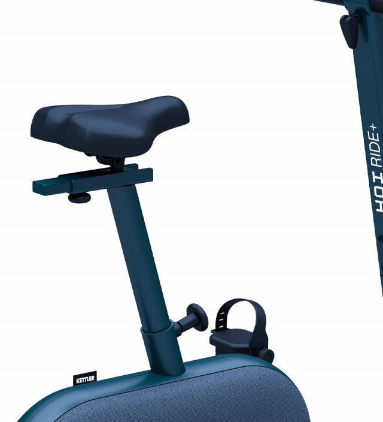
Седло и стойка
Плюс: Видно, что высоту можно менять.
Ограничение: Размеры и фиксация именно версии с плюсом не подтверждены.
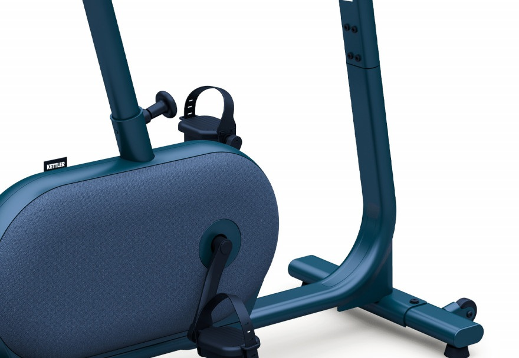
Педаль с ремешком
Плюс: Есть отдельный контакт стопы с предметом.
Ограничение: Педалирование не входит в наш выбранный набор движений.
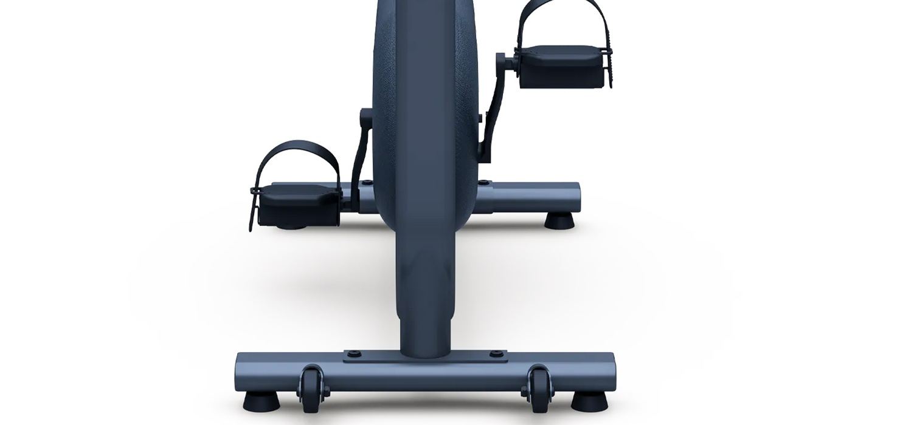
Основание
Плюс: Можно изучить форму опоры на пол.
Ограничение: По фотографии нельзя подтвердить устойчивость под нашей нагрузкой.
Консоль
Плюс: Различимы экран и органы управления.
Ограничение: Экран не является необходимой функцией нашего макета.
Дети: не добавляем новый педальный сценарий только ради этого аналога.
Молодые: не заменяет ни коврик, ни свободные веса.
Пожилые: седло и руль не считаем готовой заменой подходящего стула и поручня.
Нейтральный вывод: Низкий приоритет: полезны отдельные наблюдения о входе, регулировке и дисплее. Данных точной версии мало, а основная функция не совпадает с нашими упражнениями.
Надёжный длительный опыт именно этой модели в текущей подборке не установлен. Ресурс и удобство по одним фотографиям не оцениваем.
Характеристики и фото: KETTLER HOI RIDE+: историческая ссылка и фото
14. KILO / Kilo_home
Детали на фотографиях: польза, ограничения и перенос в наш проект.
Детали на фотографиях: польза, ограничения и перенос в наш проект.
Отдельные гантели и гири из цельнолитого чугуна с порошковым покрытием. В прежней подборке гантели 2/3/4 кг и гири 7/9 кг; это ассортимент, не назначение нагрузки. Габариты конкретного груза и размер хвата для проектирования гнезда не подтверждены. Материал перепроверен по FAQ бренда.
Цельная форма груза
Плюс: Предмет легко выделить визуально в интерьере.
Ограничение: Форма и цвет не делают тяжёлый груз подходящим ребёнку.
Хват двумя руками
Плюс: Можно изучить положение кистей при удержании.
Ограничение: Нужны реальные размеры хвата, а не оценка по фото.
Поверхность крупным планом
Плюс: Можно сравнить форму контакта и место опоры.
Ограничение: Порошковое покрытие не доказывает нескользящий хват влажной кистью.
Использование отдельно от хранения
Плюс: Вес можно взять и заниматься вне корпуса мебели.
Ограничение: После взятия нужно оставить свободную траекторию и место возврата.
Дети: мягкий игровой предмет хранится отдельно; взрослый вес не включён в детскую основу.
Молодые: гантели соответствуют выбранным приседу и наклону после подбора массы.
Пожилые: основные примеры не требуют гантелей, но доступ и возврат можно изучать.
Нейтральный вывод: Инвентарь, не самостоятельный тренажёр. Для проекта важнее измерить выбранные веса и сделать удобные гнёзда, чем копировать декоративную форму.
Надёжный длительный опыт именно этой модели в текущей подборке не установлен. Ресурс и удобство по одним фотографиям не оцениваем.
Характеристики и фото: KILO: FAQ бренда и сохранённый ассортимент
15. Kenko Aerobic Dumbbells
Детали на фотографиях: польза, ограничения и перенос в наш проект.
Детали на фотографиях: польза, ограничения и перенос в наш проект.
Вариант Aerobic: канадский клён/американский орех, позолоченная латунь и сталь. Массы 0,5/1/1,5/2 кг; длины 170/220/270/320 мм, диаметр предмета 45 мм по каталогу. Это конкретная серия, не вся продукция Kenko. Диаметр предмета не принимаем автоматически за требуемый диаметр хвата.
Человек держит пару
Плюс: Виден масштаб предмета относительно кисти.
Ограничение: Фотография не подтверждает пригодность всем размерам рук.
Дерево и металлические части
Плюс: Можно разделить поверхность контакта и массу.
Ограничение: Материал сам по себе не гарантирует удобного хвата.
Размерный ряд
Плюс: Понятно, что длина меняется вместе с массой.
Ограничение: Одно короткое гнездо может не подойти всем вариантам.
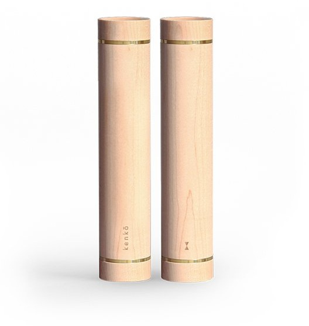
Торцы крупным планом
Плюс: Можно изучать кромку и место опоры предмета.
Ограничение: Удар, качение и очистку надо проверить на образце.
Дети: небольшая масса из каталога не является назначением ребёнку.
Молодые: сравниваем хват и хранение, достаточность сопротивления не задана.
Пожилые: гантели не нужны основным движениям; берём только наблюдения о контакте кисти.
Нейтральный вывод: Ориентир тактильного качества и размерного ряда. Необходимость дорогих материалов и большого набора весов для нашего проекта пока не доказана.
Надёжный длительный опыт именно этой модели в текущей подборке не установлен. Ресурс и удобство по одним фотографиям не оцениваем.
Характеристики и фото: Kenko: каталог, Aerobic Dumbbells, печатная стр. 9